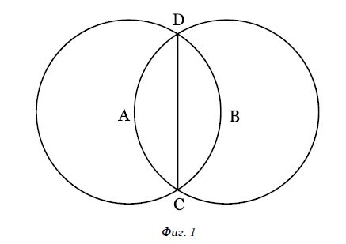

Беседа 1438 от 3877 · Беинса Дуно
Два центъра
Чете се резюме на темите: „Качества на милосърдието, качества на вкисването.“
Мнозина разглеждат вкисването като отрицателен и вреден процес в природата. Не, вкисването има и добри страни. Когато става без участието на разумността, вкисването е вредно. Обаче, взима ли разумността участие, вкисването допринася голяма полза в живота. Прясното мляко трябва да се вкисне, за да се превърне в кисело. За да бъде вкусен, хлябът трябва да съдържа мая, квас. Следователно, когато говорите за вкисването, спрете вниманието си върху добрата и върху лошата му страна. Разглеждате ли го само от една страна, вие ще дойдете до криви заключения. От това, че огънят изгаря, можете ли да кажете, че е вреден? За да разберете смисъла и значението на нещата, вие трябва да ги разглеждате от две страни. Всяко нещо в природата е двуцентрово. Човек не може да живее с един център. Той трябва да се стреми към един център, но сам по себе си той е двуцентрово същество. Той има две очи, две уши, две ноздри, два крака, две ръце. Ще кажете, че човек може да гледа и с едно око. Това е дефект. Той може да гледа с едно око само затова, защото е привикнал да гледа с две очи.
И тъй, когато говорим за човека, ние разбираме същество с два центъра: единият център се е проявил навън, във формата на жена, а другият — във формата на мъж. Когато тия два центъра се стремят един към друг, те образуват права линия.

Злото и доброто съществуват в природата като два противоположни принципа. Смъртта и животът също представят два противоположни процеса. Както злото черпи сила от доброто и създава нещо ново, така и смъртта взима материя от живота и създава нещо ново. Смъртта се отличава от живота по това, че се придружава с вкисване, т. е. с разлагане. Когато човек расте и се развива правилно, вкисването е на място. Това вкисване е приятно. Казват, че гневът е вкисване. Обаче, който се гневи, той работи. Престане ли да работи и да се развива, човек започва да се разлага. Това разлагане наричаме неправилно вкисване. При това вкисване настъпва смърт. Следователно работете, учете, да не дойдете до положение да превърнете естественото вкисване в неестествено.
Мнозина казват: Човек не трябва да се вкисва. Не, правилното естествено вкисване е неизбежен процес в природата. Такова вкисване става и със светията и с праведния, и с учения, и с философа. Опасно е, когато вкисването се превърне в разлагане. Тогава се явява злото. Доброто е зло за лошия човек, и злото е зло за добрия. Месото е зло за овцата, но и тревата е зло за вълка. Следователно зло е всяко нещо, което не отговаря на естеството на човека. Всичко, което човек върши съобразно своето естество, е добро. Всичко което не е съгласно с естеството на човека е зло.
Правата СД (фиг. 1) показва посоката, по която се движи духовният човек. Правата АВ е посоката, по която се движи физическият човек. В човека-животно гръбначният стълб е успореден на земята. Когато човек се изправил на краката си, гръбначният стълб заел перпендикулярно положение към земята. От този момент лицето на човека започнало да се открива, да се освобождава от косми. В човека-жена лицето е по-открито, по-малко обрасло с косми, което показва по-голяма интелигентност. Лицето на жената показва, че тя е обработила по-голямо поле. Лицето на човека-мъж, което е повече обрасло с косми, показва по-малко обработена площ. Жената има повече ниви, лозя. Тя е заемодавец. Мъжът няма много земя, вследствие на което отива като слуга при жената. Понеже мъжът копае, обработва земята на жената, той си е присвоил правото да бъде господар. Днес мъжът работи отвън и заповядва, а жената работи отвътре. В същност истинска господарка е жената. Тя е господарка не по външно положение, но по принцип.
Като ученици, вие трябва да имате ясна представа за нещата, да разбирате вътрешния им смисъл. Човек може да разбере външния живот дотолкова, доколкото разбира вътрешния. Човек може да разбере физическия свят дотолкова, доколкото разбира Божествения. Физическият свят е отражение на Божествения. При това положение само човек може да бъде щастлив. При това положение само отношенията на хората могат да бъдат правилни. Ако някой мисли, че може да владее едно същество, той е на крив път. Никой никого не може да владее. Преди всичко, невъзможно е в един и същ момент две лица да се намират на едно и също място. Следователно, ако от центъра А опишете една окръжност, съществото В ще се намира на периферията на окръжността. Ако от точка В, като център, опишете окръжност, съществото А ще се намира на периферията. Между съществата А и В в един и същ момент само едното същество има възможност да бъде център. Излезе ли това същество от центъра, другото става център. Като се движи от центъра към периферията и обратно — от периферията към центъра, човек има възможност да работи. Правата АВ определя възможностите на жената. Правата ВА определя възможностите на мъжа. Изобщо правата линия показва, че имаме отношение между две същества. Влезе ли трето същество между тях, линията става крива. Колкото повече същества влизат в отношения, толкова повече кривата линия се удължава. При тия отношения съществата трябва да имат общ център, от който разстоянието до всички точки на периферията е еднакво. Отношението на всяка точка от окръжността към центъра на кръга е право. Това отношение наричаме отношение към Бога. Обаче, отношението на всяка точка от окръжността към другите нейни точки подразбира движение по крива линия. Такова е отношението към ближния.
Следователно, кажем ли, че между две същества се образува права линия разбираме отношение на тия същества към Божествения принцип, който ги свързва. В този смисъл мъжът и жената представят едно цяло, а не отделни същества. Докато мъжът и жената мислят, че са отделни, самостоятелни единици те се самоизлъгват. Мъжът и жената представят две страни на едно цяло. Нито мъжът може без жената, нито жената без мъжа. Въпреки това те не могат нито да се събират, нито да се делят.
Същото отношение виждаме и между Бога и човека. Вън от Бога човек не може да съществува. Бог е цялото, което включва всичко в себе си. Той обединява нещата. Мъчнотиите и страданията на хората се дължат на факта, че те търсят щастието си вън от себе си, вън от своите ближни, вън от Бога. Това е невъзможно. При това положение те се движат в сянката на щастието, но не и в истинското щастие. Разбере ли човек, какви трябва да бъдат отношенията му към себе си, към своя ближен и към Бога, той се развива правилно. Енергиите на неговия организъм текат правилно, както водата на планинския извор. Докато водата тече без да изтича, без да се намалява, изворът е във връзка с източника на живота. Намали ли се водата му, изворът е прекъснал връзката си с източника на живота. Докато живее, силите на човека трябва непрекъснато да извират. Това значи добър човек. Спре ли потока на своите сили, човек се натъква на вътрешно напрежение в себе си, което му причинява ред пакости. Не даде ли възможност на Божественото в себе си да се прояви, човек може да се пръсне като бомба. Не е лошо да се пръсне човече, но само ако е яйце, турено под квачка. Като се пръсне това яйце пиле ще излезе от него. Ако яйцето се пръсне вън от квачката нищо няма да излезе от него. Да се пръсне човек, това значи да умре. В този случай умирането е на място, защото от човека излиза нещо ново. Не излезе ли нещо ново от него умирането е безпредметно.
Днес от всички хора се иска разумност. Дали ще живее или ще умира, човек трябва да бъде разумен. При това той трябва ла се ползва от външния свят, защото има отношение към него. Запример иска ли да придобие сила, човек трябва да изучава живота на млекопитаещите. Иска ли да придобие хладнокръвие той трябва да изучава живота на рибите. Ако човек не изучава живата природа и не прилага нейните закони, животът му на земята се обезсмисля. Задачата на съвременната наука и религия се заключава именно в това, да застави човека да изучава природата и да прилага нейните закони. Това са проповядвали и Великите Учители на човечеството, но ония от учениците им, които не са разбрали учението им, са внесли в него известно изопачаване. Ако днес дойде Христос на земята, сам ще се чуди, как са могли хората да изопачат учението Му. Какво верую е онова, което се проповядва външно само? Едно верую или едно учение има смисъл, когато се изнесе вътрешната му страна. Едно учение има смисъл, когато може да се приложи. Спрете ли се само върху външната му страна, това учение не ползва човека. Човекът е ценен не по своята външна красота, но по своите мисли, чувства и постъпки.
Следователно, външната страна на живота е дотолкова ценна, доколкото е в съгласие с вътрешната. Ако се възхищавате от това, че някой човек е добър без да искате да вземете нещо от неговата доброта, възхищението ви е на място. Искате ли обаче да вземете нещо от добротата му, вашето възхищение не е на място. Като разглеждате човека, вие трябва да сте убедени в неговата вътрешна доброта. Ако външно само е добър, тази доброта няма да го ползва, но и окръжаващите няма да се ползват от нея. Външните отношения са ценни тогава, когато в тях липсва користолюбието. Освободи ли се от користолюбието си, грешникът може да се учи от светията. Не се ли освободи от користолюбието си, той не може да бъде ученик на светията. Ако грешникът мисли че с усилията, които прави, може да стане като учителя си, той се самоизлъгва. За да следва добре пътя на своя учител, грешникът трябва да е запазил нещо от своята праведност. Който не носи правдата в себе си, той никога не може да бъде праведен. Който не носи условия за гениалност в себе си, той никога не може да стане гений. Талантливият трябва да бъде роден за талантлив. Това не трябва да ви обезсърдчава, но да знаете, че красивите, великите неща не се купуват наготово. Те трябва да се придобият, да се работи за тяхното постижение. Каже ли някой, че иска да бъде свят, добър или щедър, той не е придобил нещо много. Истинската святост, доброта, щедрост са вътрешни качества. Някой носи на гърба си сто килограма товар и пъшка под неговата тежест. По пътя го срещат бедни хора, които искат да им даде нещо. Той се спира, сваля товара от гърба си и започва да раздава на този десет килограма, на онзи десет килограма, докато останат на гърба му само 40 кг. Всички го считат добър, щедър човек, без да се спират върху мотивите, които го заставят да бъде такъв. Той се е натоварил с багаж, който не може да носи. Ако не даде част от него на другите, товарът ще го смачка. Когато се произнасяте за качествата на някой човек, вие трябва да знаете кои са дълбоките мотиви, да се проявява той по един или по друг начин.
Под думата добро ние разбираме първичното добро в човека, т. е. израз на Божественото в него. Човекът е добър, когато може да даде израз на Божественото в себе си. С други думи казано: доброто в човека не е нищо друго, освен желанието на Бога да се прояви в него. Даде ли ход на това желание, човек е проявил доброто в себе си. Доброто изтича от човека, както водата от извора. Значи, всяко желание, всяка мисъл, всяко чувство в човека, които го заставят да се прояви, се дължат на Божественото, на онзи първичен импулс, който някога му е даден. Не се ли подаде на този импулс в себе си, и да пожелае да направи някакво добро, човек няма да знае как да го реализира. Той ще мисли как да го направи: по Божествен или по човешки начин. Колкото малко да е доброто, което сте решили да направите, не трябва да се спъвате. Малкото добро е малка дупчица, направена във вашето сърдце. Ден след ден тя ще се разширява, докато един ден от нея започне да тече изобилно. — Ама богат бил този човек, трябвало много да дава. — Колкото малко да дава и това е добро. Страшно е когато дупчицата се запуши.
Като ученици, вие трябва да намерите първичните импулси в себе си и да им дадете ход да се проявят. Като даде възможност на Божественото в себе си да се прояви, по този начин човек изучава, както себе си, така и своя ближен. За да се изучава, човек трябва да има вътрешно разбиране на нещата. Някой погледне носа на някого и казва: Този човек е интелигентен. Носът определя, наистина, възможностите на човешката интелигентност, но тя не зависи изключително от човешкия нос. Чрез окото се проявява истината, но ако не знае как да движи окото си, как да гледа, човек ни най-малко не се е домогнал до истината. Много болести се дължат на неправилно гледане, на неправилно ходене, на неправилно слушане и т. н. Изобщо всички аномалии, всички неправилности във физическия и психическия живот на човека причиняват ред болести и страдания. За да бъде здрав, човек трябва да знае как да гледа. От ъгъла на неговото зрение зависи посоката на неговия живот. Срещнете ли един човек, вие трябва да знаете, отде да започнете да го гледате: от главата към краката или от краката към главата. В двата случая ще имате два различни резултата. Доброто свирене на цигуларя зависи от умението му да управлява лъка и да туря пръстите си на съответните им места.
Всеки човек има цигулка и лък, с които може да даде израз и направление на своя живот. Сърдцето представя цигулката, умът – лъкът с който свири, а волята, това е участието на човека в свиренето, чрез което определя посоката на своя живот! Публиката е самият човек. Без публика никой не може да свири. Поне един човек, но все трябва да има някой да го слуша. Ако човек сам не се въодушевява, никой не може да го въодушеви. Като свири, човек може да се допитва до мнението на другите, но първо той трябва да чуе своето мнение. Божественият закон изисква всеки сам да се въодушевява, сам да има мнение за своите постъпки, а после другите. Някой си купил нови обуща, които го стягат. Той пита приятелите си, харесват ли обущата му. Отвън обущата са хубави, но отвътре не са. Едно от качествата на обущата е да прилягат добре на краката. Стягат ли някъде, те не са добри. Обущата са добри тогава, когато при сто километров път, извървян с тях, не причиняват никакви пришки. Същата преценка се отнася и в правенето на добро. Истинско добро е това, което не причинява никакви пришки на ръцете и на краката на онзи, който го е направил. Каквито дрехи и обуща носи човек, те трябва да прилягат добре на тялото му, да не го ограничават. Каквото човек върши, делата му не трябва да го ограничават. Всяко ограничаване всяко нарушаване на свободата, показва, че нещата не стават правилно.
Съвременните хора сами се ограничават, а после говорят за свобода. Слушате да казват на младия момък да не гледа жените, а на младата мома — да не гледа мъжете. Да гледа човек мъжа или жената не е лошо. В това няма нищо престъпно. Лошото е, когато човек не знае как и откъде да гледа. Искаш ли да гледаш мъжа или жената, качи се на високо и оттам гледай. Поставете всеки човек на мястото му и оттам гледайте. Не го ли поставите на определеното му място, вие ще гледате криво. Колкото да ограничавате човека, ако той няма разбиране, вие ще го наплашите но няма да го изправите. Когото срещнете днес, всеки е наплашен: той се страхува, да не би мисълта му да е крива, или желанието нечисто и не смее да се прояви. Всички мисли, чувства и желания, които минават през човека, са добри, чисти. Те се изопачават, когато се приложат. Значи слабата страна на човека е в приложението. Докато са на дървото, ябълките са красиви, здрави. Щом започнат да ги берат, за да ги продават, те тук-там се натъртват и започват да гният. За да се научи да мисли и да разсъждава право, човек трябва да излезе от стария живот и да влезе в новия.
Старият живот е статически, а новият — динамически. Новият живот изисква приложение, динамика. Старото трябва да отстъпи мястото си и в живота, и в науката, и в изкуствата. Някой се моли, сяда на колене, кръсти се и се чуди защо не получава отговор на молитвата си. Той се моли по стар начин и при това външно само. В молитвата трябва да вземе участие и сърдцето, и умът, и душата, и духът. Като се моли така човек се тонира. В този смисъл молитвата подразбира тониране. За да се моли човек трябва да има камертон, да нагласи четирите струни на цигулката си и да започне да свири, да взима чисти тонове, чисти акорди. Молитвата подразбира тониране, нагласяване, свързване с Бога. Молите ли се на Бога, ще говорите ясно, разбрано, чисто, искрено, без никакъв фалш. Ще говорите това, което мислите. Когато синът говори с баща си, а дъщерята — с майка си, те трябва така да говорят, че да ги задоволят. Като се моли на Бога, човек трябва да се подмладява. Не се ли подмладява всеки ден, човек не знае да се моли, няма религия в себе си. Казва ли човек, какво е бил едно време и какво е станал сега, той нито знае да се моли, нито има религия в себе си. — Едно време правехме големи усилия, едно време обичахме Бога. — Кой е виновен за вашето минало? От гледището на Божествения свят, каквото е било в миналото, това е и сега. Едно време имахте жена и деца, грижехте се за тях, но сега нямате жена и деца, те са заминали за онзи свят, и като няма кого да обичате и за кого да се грижите, вие губите своята набожност. Казвате тогава, че Бог ви е забравил. Не, това е криво разбиране. Всяко криво разбиране води към вкисване. За да се освободи от това вкисване, човек трябва да оправи първо отношенията си към Божествения свят.
Когато се говори за работа върху себе си човек често се обезсърдчава намира, че много години трябва да работи. Някой казва, че е работил 15-20 години върху себе си и нищо не е постигнал. — Защо не е постигнал нищо особено? — Не е работил, както трябва. Всяко число крие в себе си особени сили, които трябва да се разбират. За мъжа щастливи числа са 1 и 2, а за жената – 1 и 9. Значи щастливо число за мъжа е числото 12, а за жената — 19. Като съберете 1 и 2, получавате числото 3. Тройката представя разпукване на житното зърно. Като поникне, то образува котва. Котвата означава процес на растене. Дойдете ли до числото три, ще знаете, че ви се дават условия да се развивате, да се размножавате, да приемете Божествената енергия в себе си. Числото две представя нивата на която човек трябва да посажда своите мисли и чувства. Единицата пък е семето, което той сади, т. е. неговите мисли и чувства.
За да расте, човек трябва да има на разположение нива и семе, т. е. числата едно и две. След това иде действието и на другите числа върху човека, а именно числата 3, 4, 5, 6. 7, 8 и 9. За да действат тия числа върху човека, Първата Причина се явява като обединяващ принцип. Тя ги обединява в едно, за да могат силите им да действат едновременно и целесъобразно. Като се движи от едно място на друго, човек трябва да прави връзка между нещата. Рече ли да измени пътя на своето движение, той непременно трябва да го огледа, да види, какви спънки ще срещне. Преди да е тръгнал по този път, той трябва да отстрани всички спънки. Ако по конеца детето знае, докъде най-високо може да стигне неговото хвърчило, колко повече човек трябва да знае, докъде се простират възможностите на неговото движение. Ако той мисли само за ядене и пиене, конецът за който е вързан, е много къс. Този човек е хвърчило, което сутрин пущат в движение, а вечер прибират. Когато някой се оплаква, че е сгрешил, или че се е оплел някъде, това показва, че са взели хвърчилото му. За да не взимат хвърчилото ви, трябва да стоите на известно разстояние от хората.
Като ученици, вие трябва да дадете път на Божественото в себе си. Дойдете ли до това положение, не трябва да критикувате Божественото, да се произнасяте за неговите прояви. Реката трябва да следва пътя към морето, да не се отклонява, да не се занимава с други реки. Ако се спира тук-там по пътя си, ще я впрегнат на работа, градини и бостани да полива, воденици да кара. В края на краищата тя ще каже, че е свършила много работа. Свършила е много работа, но не по нейна воля. Други са я заставили да работи. Следователно, като сте дошли на земята да учите, не отвличайте ума си, да мислите, че можете да вървите в пътя на другите хора. Всеки човек има свой определен път. Всеки трябва да изправи отношенията си към Бога — никаква друга философия не му трябва. Ще кажете, че трябва да учите. Всеки човек трябва да учи, но той трябва да намери онзи учител, който е определен специално за него. Намери ли своя учител, работата му тръгва напред. Този учител не взима никакви пари. Той работи за Бога, като изисква от ученика си, каквото спечели, да го внесе в Божествената банка. Истинският учител е онзи, който не работи за пари. Този учител трябва да учи ученика си с любов, да го научи, какво представя ума и сърдцето, да знае, какво нещо е човекът-мъж и човекът-жена, да разбира душата и духа си.
Ученикът трябва да разбира функциите на тялото си, да знае как да се справя с него. Какъв ученик е този, който не разбира сърдцето си? Какъв ученик е този, който не знае, какво нещо е любов, светлина и свобода? Някой ще каже, че иска да разбере необятната любов. За да разберете нещата от гледището на любовта, вие трябва да я изучавате в най-малките й и слаби прояви. Представете си, че сте вървели дълго време в гората и сте замръзнали от студ. В това време един непознат човек ви среща и ви завежда у дома си да ви стопли и нахрани. След това вие се разширявате и казвате, че любовта ви е посетила. Това е една от малките прояви на любовта. Всяка мисъл, която внася светлина в ума, и всяко чувство, което внася топлина в сърдцето, колкото малки да са, наричаме Божествени. Ако възприема тия мисли и чувства в себе си, човек постепенно се разширява, докато стане готов да приеме Божественото в по-голям мащаб, да приложи новия живот.
Съвременните хора страдат от това че отричат Божествения живот в себе си. Мнозина отричат учените, философите, като не признават това, което са писали. Наистина, учените и философите пишат това, което знаят, но и в него има наука, и в него има истина. Математиците решават задачи с неизвестни, от които намират, че Х е равен на 0, на 1, на 2, на 3 и т. н. После изчисляват Y. Когато X = 0, това показва, че учените са намерили семето, което посаждат в нивата Y. След това намират Z, т. е. условията, при които семето може да израсте и да се развие. Това са трите неизвестни в задачата. И при това положение задачата още не е решена. Всички очакват жетвата, да видят какви резултати ще имат. Следователно, разрешението на задачата се заключава в плода, който човек придобива в живота си.
Сега, като знаете това не си правете илюзии, да мислите, че който е намерил правия път, той е разрешил всички въпроси. Този път трябва да се извърви. Човек вижда резултатите на своя живот, само когато извърви пътя, в който е влязъл. Ако не достигне крайния предел на своите възможности, човек не може да мине в новия живот. Зад този живот, в който сега живеем има друг, по-широк, с по-големи възможности. Ако не можете да разчупите черупката на сегашния си живот, вие всякога ще бъдете затворени в него. За да счупите черупката на сегашния си живот, вие трябва да имате високо съзнание за нещата, висок идеал към който да се стремите. Като разчупите първата черупка, ще се намерите пред втора, трета и т. н. Много черупки трябва да разчупите, докато влезете в света на истината, която ще ви направи свободни. Това не може да стане изведнъж, но постепенно. Ще падате, ще ставате, ще работите, докато един ден постигнете стремежите на вашата душа.
Дръжте в ума си мисълта, че човек е двуцентрово същество. Като се движите от единия до другия център, вие ще разрешавате задачите си правилно и ще вървите напред. — Ами Бог къде е? — Това не е важно. За човека е важно да се движи в светлината и топлината на Бога, да чувства потика, който иде от Него, и да върви напред. Като се свърже с Първата Причина, той е готов да възприема благото на живота от всеки човек. Дойде ли някой да почука на вратата ви, да носи Божественото благо, станете веднага на крак и му отворете. Дали сте болен или здрав, не се колебайте. И на смъртно легло да сте, станете и отворете на Божия пратеник. Посрещнете посланика от Божествения свят и тогава умирайте, ако сте дошли вече до този час. Кажете на смъртта да ви почака малко. Пред Божественото и смъртта отстъпва. Като чуе гласа Му, тя веднага си заминава.
— Бог е Любов. Бог е Мъдрост. Бог е Истина. Божията Любов, Божията Мъдрост, Божията Истина пребъдват с нас.
12. Лекция от Учителя, държана на 13 ноември, 1929 г. София — Изгрев.